积分：100.69
自我介绍

王浩彬
大家知道什么是前端开发吗？
 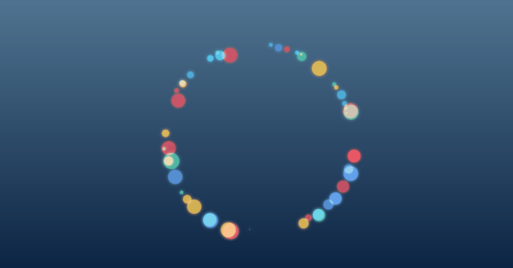
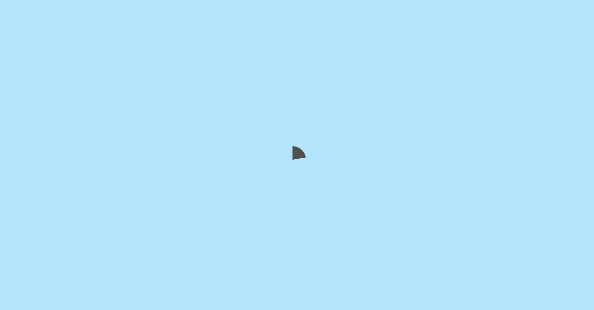
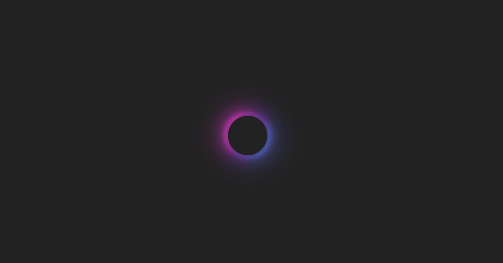
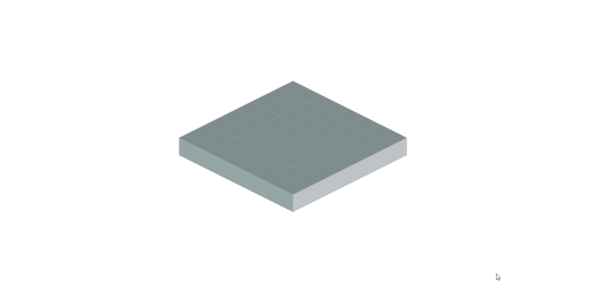
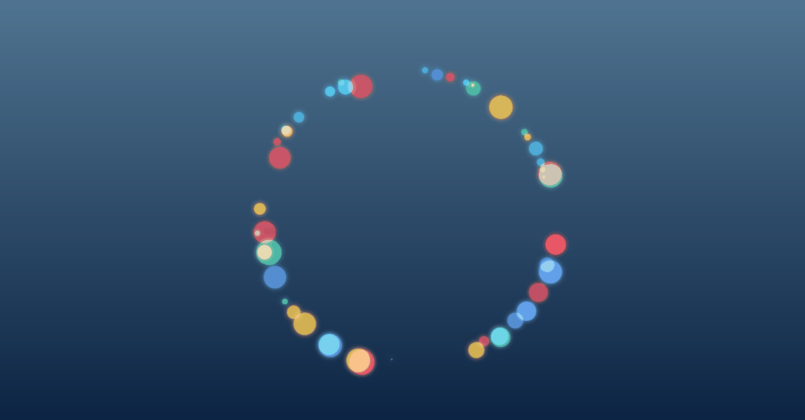
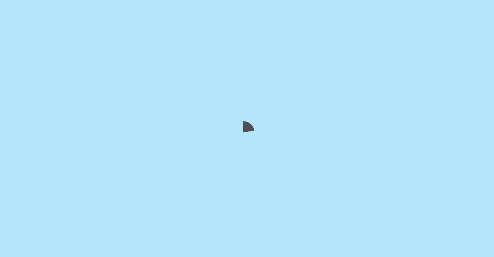
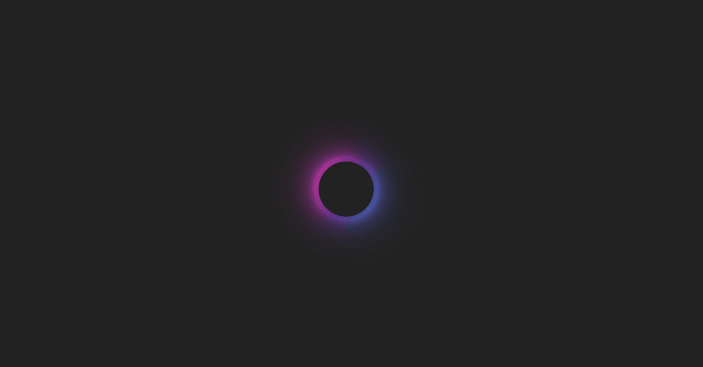
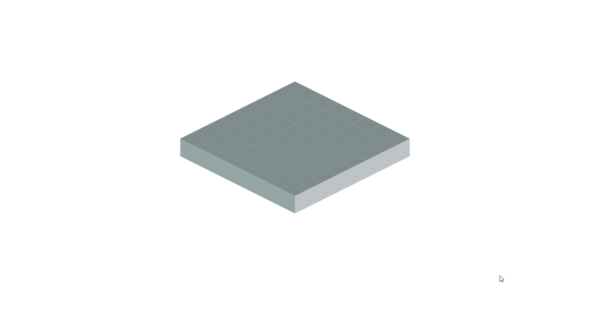
刚才的用户界面和动画效果是怎么来的呢
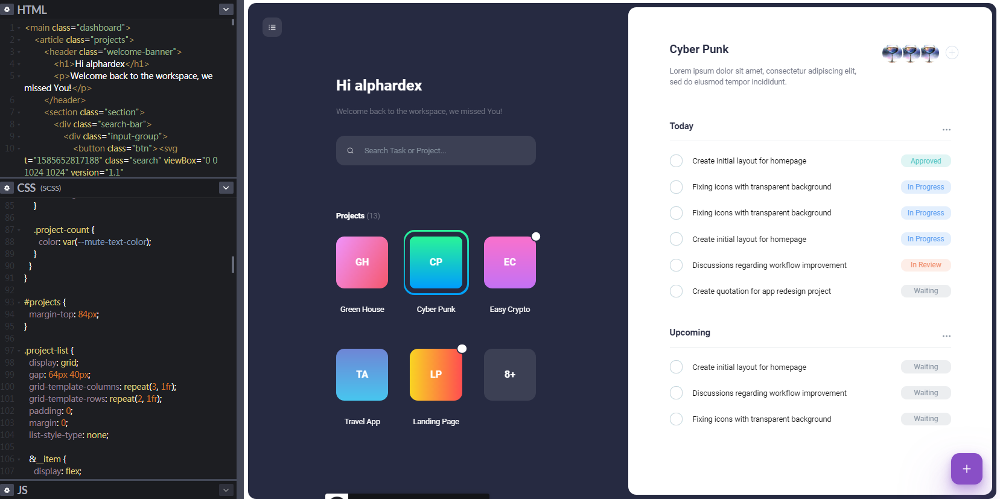
是前端工程师用HTML+CSS+JavaScript编写而成的
工作成果
项目示例
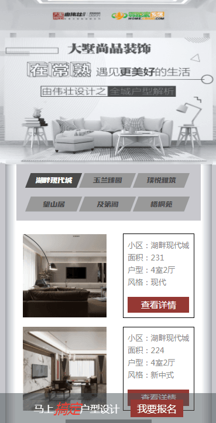
大墅尚品
夏日饮品节
高新区答题
性格测试

常熟七五普法
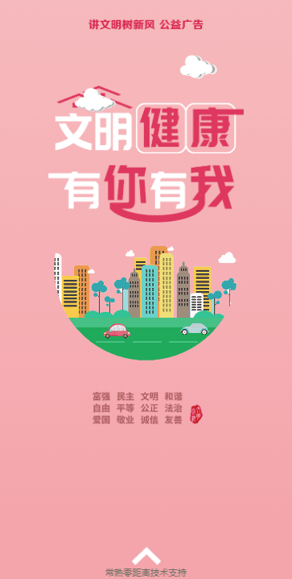
文明健康广告
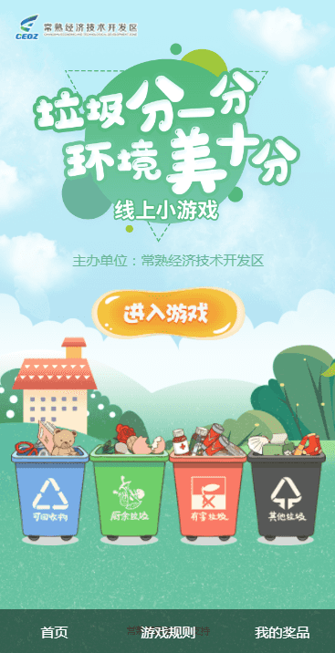
垃圾分一分
禧徕乐周年庆
卡滋贝诺点亮
十佳污防投票
城市管家投票
家装监理小程序
Loading
扫码即可体验该活动哦~

高新区答题活动

活动特色
横版卷轴类答题闯关活动，以一个工人的视角来走遍
生产环境的每一个角落来进行安全生产相关的知识问答
，给人一种身临其境的感觉，
体现了“安全生产”这一主题
生产环境的每一个角落来进行安全生产相关的知识问答
，给人一种身临其境的感觉，
体现了“安全生产”这一主题
活动流程
- 主人公在画面左上方出现，开始行走
- 行走至第一个点时停下脚步，划入问题弹窗
- 回答正确与错误则弹出相应的弹窗
- 之后主人公继续行走，画面也会随之移动
- 如此往复答完5题，跳转到海报页面
- 结果会提交到后台，5题全对则增加抽奖机会
活动要点
- 如何实现在一张大图上行走和闯关
- 如何切换主人公的行走状态
- 如何切换问题
扫码即可体验该活动哦~
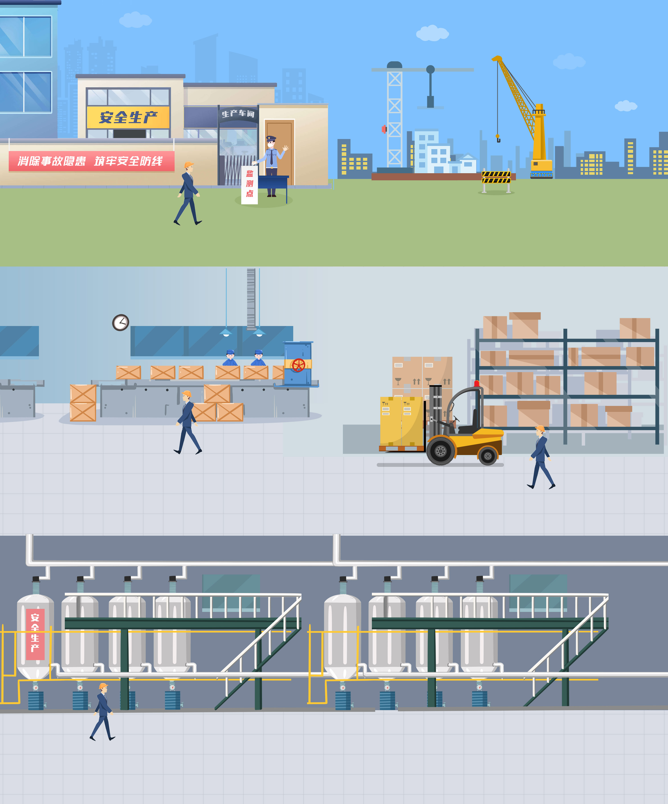
高新区答题活动全景
扫码即可体验该活动哦~

垃圾分一分活动

活动特色
定时垃圾分类的游戏活动，用户应在1分钟的时间内
尽可能多地将从天而降的垃圾分到正确的垃圾桶里
，体现了“垃圾分类”这一环保主题
尽可能多地将从天而降的垃圾分到正确的垃圾桶里
，体现了“垃圾分类”这一环保主题
活动流程
- 倒计时开始，游戏开始
- 各种垃圾会不断地从屏幕上方的随机位置落下来
- 垃圾落到地面上会消失
- 尽可能多地将垃圾拖放到正确的垃圾桶内
- 分类正确则加分，错误则减分
- 1分钟内达到100分以上即可获得抽奖机会
活动要点
- 如何控制垃圾的动画（下落，拖拽等）
- 如何让垃圾下落是随机的
- 如何判断垃圾是否被正确地归类了
扫码即可体验该活动哦~

常熟普法活动

活动特色
滑动式的展示活动，用户通过滑动手机屏幕来体验一个个
法制宣传相关的案例，体现了“七五普法”这一个主题
法制宣传相关的案例，体现了“七五普法”这一个主题
活动流程
- 进入页面后开始下滑
- 下滑的过程中会不断地出现元素
- 元素出现的动画种类很多
- 当上滑时元素会消失，再次下滑时出现
活动要点
- 如何实现滚动时的“倒带”动画效果
- 如何实现动态渐变文字
心得体会
动画，为前端赋予灵魂


- 在现实生活中，人们的大脑习惯了被动态的东西所吸引
- 适当的动画效果可以为网页添加有价值的交互和反馈，提升用户的情感体验
- 前端开发中实现动画有以下方式：CSS、SVG、Canvas、WebGL、JS动画引擎
- 个人经常用CSS实现动画，在掘金上写过一篇文章，链接在此ppt末尾
适配与兼容性，必须做到完美无缺

样式属性兼容性表

同一张页面在不同手机屏幕上的显示
- 在前端开发的过程中，适配与兼容性是必须要考虑的问题
- 页面在每个手机中显示各不相同，要确保页面在每个手机上的显示都是正常的
- 每个系统都有各自的特征，要根据这些特征进行适配，杜绝因系统本身而产生的问题
团队沟通，是必须要保证的

- 项目进度要及时和产品/客户确认
- 多沟通才能正确把握客户的需求
- 项目做好要自测，确保基本无误后再交付产品测试
- 每一个项目都是团队成员共同努力奋斗而成的结晶，因此团队沟通无比重要
要定期总结，温故而知新

- 做完一个活动时，要将遇到的问题统统地总结归纳出来
- 这样下次遇到同样的问题时就能立马解决，保证项目的进度了
不足与改进

- 平时与团队成员沟通太少
- 加强与团队成员的沟通
- 做项目时还不够细心
- 做项目时能考虑到更多的方面，做到无懈可击
未来规划

我的博客

为什么要写博客？

- 如果学习是输入的话，那么写博客就是输出
- 写博客不仅能记录下自己学习的过程，还能帮助到他人
- 坚持写博客是技术人员的一种难能可贵的品质